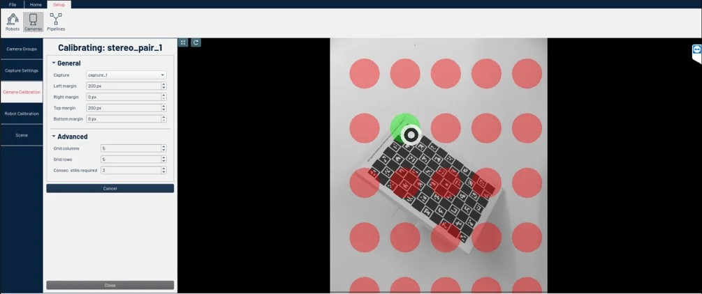

Camera Calibration Troubleshooting
Before You Begin
-
Apera Vue Computer is activated and running Apera Vue software (version 8.0.0 or higher)
-
VuePort or custom camera pair has already been calibrated
|
During robot calibration, the cameras look for the aruco marker (the sticker attached to the robot’s tool flange). If set up incorrectly, the cameras will be unable to see the marker clearly. This could result in poor robot calibration. |
Camera Calibration Verification (V9.33.0+)
For users operating Apera Vue version V9.33.0 or later, a streamlined process is available to validate camera calibration with a single click:
-
Select Calculate Full Depth from the Ribbon.
|
The system will log the Estimated Rectification Error as a pixel shift measurement, accompanied by a qualitative assessment:
|
-
If the result indicates a poor calibration, recalibrate the cameras.
| You will have to define an active vision region under your calibrated camera pair to run full depth on the scene and validate your camera calibration. |
Camera Calibration Plane Adjustment
| If you calibrated the cameras at a plane where the bottom of the bin sits, you might have to recalibrate the cameras at the midplane of the bin. This is crucial if you have a deep bin. |
Recalibrate the cameras at the bin’s midplane:
-
Remove the bin from the cameras field of view.
-
Place a reasonably flat piece of sheet metal or cardboard over some support that is roughly the same height as the midplane of the bin.
|
If midplane calibration is not possible, consider calibrating the cameras at the top of the bin. You can do this by placing the sheet metal or cardboard over the top of the bin. |
Camera Calibration Procedure Adjustment (V9.4.0+)
If you are running Apera Vue 9.4.0 or higher, you can change camera calibration settings from the UI.
| Contact Apera Support if you wish to upgrade to the latest Apera Vue version or change these settings on an older version. An Apera Robotics Solutions Engineer will assist you. |
Access the camera calibration settings:
-
Select Setup > Cameras > Camera Calibration.
-
Select Edit on the camera pair you wish to change.
You will see the following screen.

-
ensure you have camera calibration marks (red dots) at every place you expect a pickable part and the aruco marker (robot calibration sticker) to be.
-
Change your camera calibration margin by tweaking the Left, Right, Top, and Bottom margins under the General tab.
| The area in red will not be considered during camera calibration. |
-
Increase the number of dots in the region of interest (ROI) by adjusting Grid Columns and Grid Rows in the Advanced tab.
-
Proceed with calibrating the cameras.
-
Rotate the calibration pad in many different positions throughout the calibration process for the best results.
| Never keep the pad in only one single rotational position. |